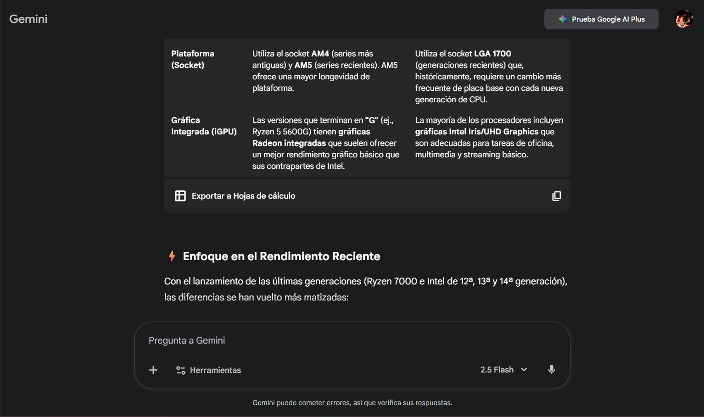

Trabajo Práctico Consolidado: Fundamentos de Computación
Fragmento 1: Introducción y Requerimientos
Universidad Autónoma de Entre Ríos
Facultad de Ciencia y Tecnología
Fundamentos de Computación
Trabajo Práctico Nº 1
Tema: Streaming de videojuegos
Profesores: Bioing. Ismael Cassi, Lic. Paolo Orundés Cardinali
Integrantes: Gabriel Schmunk, Dylan Berón Aguirre
Comisión: Miércoles 15hs
Fecha de Entrega: 25/09/2025
Año Lectivo: 2025
Juego elegido
Nombre: Counter-Strike 2
Descripción: Es un juego de disparos en primera persona por equipos donde dos equipos, Terroristas y Antiterroristas, luchan con diferentes roles y tareas para ganar.
Requerimientos mínimos
- Sistema Operativo: Windows 10 de 64 bits
- Procesador: Intel Core i5 750 o superior
- RAM: 8 GB
- GPU: Tarjeta gráfica compatible con DirectX 11 y con 1 GB de VRAM o más
- Almacenamiento: 85 GB de espacio libre en disco
Requerimientos recomendados
- Sistema Operativo: Windows 10 de 64 bits
- Procesador: 6 núcleos o más, como un Intel Core i7 o AMD Ryzen 5
- RAM: 16 GB
- GPU: Tarjeta compatible con DirectX 12 y Shader Model 6.0, con al menos 4 GB de VRAM (ej. NVIDIA GTX 1060 o AMD RX 580)
- Almacenamiento: 85 GB de espacio libre en disco
Fuente: Steam
Imágenes

Juego a comparar
Nombre: Call of Duty: Modern Warfare II (2022)
Descripción: Juego de disparos en primera persona, multijugador por equipos, con modos competitivos y gráficos realistas. Popular en streaming competitivo.
Requerimientos mínimos
- Sistema Operativo: Windows 10 64-bit
- Procesador: Intel Core i5-4460 / AMD FX-8350
- RAM: 8 GB
- GPU: NVIDIA GeForce GTX 960 / AMD Radeon RX 470 con 2 GB VRAM
- Almacenamiento: 175 GB de espacio libre en disco
Requerimientos recomendados
- Sistema Operativo: Windows 10/11 64-bit
- Procesador: Intel Core i7-4770 / AMD Ryzen 5 1600
- RAM: 12 GB
- GPU: NVIDIA GeForce GTX 1070 / AMD RX 580 con 6 GB VRAM
- Almacenamiento: 175 GB de espacio libre en disco
Imágenes

Fuente: Activision
Fragmento 3: Propuesta de Equipo y Justificación(Gabriel Schmunk)
Propuesta de Equipo de Computación para Streaming
Estudiante: Gabriel Schmunk
Objetivo: Correr juegos multijugador con buen rendimiento y realizar streaming en calidad 720p-1080p, dentro de un presupuesto máximo de 1000 USD por integrante (~1.500.000 ARS).
Componentes y Comparativas
| Componente |
Detalle / Características |
Alternativa descartada / Comparativa |
Precio (ARS) |
Link |
Justificación |
| Placa Madre |
ASUS Prime A520M-K - Socket AM4, DDR4 hasta 64GB, 3200 MHz, HDMI, PCIe x16, M.2 |
Gigabyte A520M-H: similar, pero menor soporte de RAM rápida y BIOS menos intuitiva. |
85.999 |
Click aquí |
Compatible con Ryzen 5 5600G, soporte para expansión futura, confiable y estable. |
| Procesador |
AMD Ryzen 5 5600G - 6 núcleos / 12 hilos, 4.4GHz, gráficos Radeon Vega integrados |
Intel Core i5-11400F: similar potencia pero sin GPU integrada, requiere tarjeta gráfica adicional (más costo). |
199.999 |
Click aquí |
Ofrece excelente rendimiento en gaming y streaming con gráficos integrados Vega 7. |
| Memoria RAM |
Kingston Fury Beast 16GB DDR4 3200 MHz |
ADATA XPG 16GB DDR4 3000 MHz: más barata, pero menor frecuencia y compatibilidad más limitada. |
117.999 |
Click aquí |
Excelente estabilidad y rendimiento comprobado con Ryzen. |
| Disco SSD |
Crucial M.2 1TB P310 - 7100MB/s, PCIe Gen 4.0 x4 NVME |
Kingston NV2 1TB PCIe 3.0: más lento (3500MB/s) y menor rendimiento en lectura/escritura sostenida. |
135.999 |
Click aquí |
Velocidad muy alta, ideal para cargas rápidas de juegos y OBS. |
| Gabinete |
Raptor Sentinel Templado 4x12cm RGB, compatible ATX/Mini/Micro-ATX |
Kolink Inspire K2: más económico, pero peor ventilación y espacio reducido. |
66.400 |
Click aquí |
Buena refrigeración y estética gamer, ideal para streaming. |
| Fuente de alimentación |
Redragon GC-PS011 800W 80 Plus Bronze |
Sentey 650W sin certificación 80+: menor eficiencia y durabilidad. |
158.600 |
Click aquí |
Alta potencia, eficiencia y margen para upgrades futuros. |
| UPS |
Lyonn Desire 500VA |
Forza NT-751: más cara, pero capacidad similar; elegí Lyonn por buena relación costo-beneficio. |
77.400 |
Click aquí |
Protege contra cortes y picos de tensión, asegura apagado seguro. |
| Monitor |
Daewoo DW-CS24N Gamer 24" FHD |
Samsung LF24T350: más caro, misma resolución y tasa de refresco. |
237.000 |
Click aquí |
Buena relación precio-calidad, tamaño ideal para multitarea y streaming. |
| Combo Teclado + Mouse |
Logitech MK120 con cable |
Combo Level Up Pegasus inalámbrico: más caro (3x) y puede tener desconexiones durante streaming. |
18.999 |
Click aquí |
Sólido, confiable y con cable, ideal para largas sesiones de streaming. |
| Auriculares |
Gadnic A2000 LED Compatible PC/Play/Consolas |
JBL Quantum 100: 30.000 pesos más caros, con prestaciones muy similares. |
28.999 |
Click aquí |
Buena calidad de audio y estética gamer, cumple su función por menor costo. |
| Webcam |
Webcam WC905 FHD 1080p con micrófono incorporado |
Webcam HDC HW80S FHD: misma resolución, pero 10.000 pesos más cara. |
36.899 |
Click aquí |
Excelente relación precio-calidad, ideal para transmisiones y videollamadas. |
| Sistema Operativo |
Windows 10 Pro OEM Licencia Digital |
Versión sin licencia: presenta limitaciones visuales y actualizaciones. |
70.000 |
Click aquí |
Permite uso completo del sistema y compatibilidad con OBS, drivers y juegos. |
| Software de Streaming |
OBS Studio (gratuito) |
XSplit Broadcaster: versión gratuita con limitaciones. |
0 |
Click aquí |
Software profesional, libre y estable. Amplio soporte y comunidad. |
Total :
1.514.292 ARS.
Interacciones con Inteligencia Artificial
Primera consulta
PRIMERA “Chatgpt. podes comparar el ryzen 5 5600 g con un intel i5 que sea de la misma gama para hacer streaming de juegos como Counter strike 2 y call of duty modern warfare?”


Reflexión de la IA: Para tu caso (streaming + CS2 + Modern Warfare):
El Intel Core i5-11400F para mí sería la elección más práctica si ya planeas usar una buena GPU. Te dará todo lo que necesitas para los juegos competitivos y para el streaming, sin gastar de más en características que quizá no uses (como los gráficos integrados).
Si por otro lado estás armando algo más “generalista”, con posibilidad de usar sin GPU, o querer más versatilidad, el Ryzen 5 5600G es una excelente alternativa.
Reflexión personal: Coincido. Vi que en Technical City que el Ryzen 5 5600G tiene gráficos integrados, mayor frecuencia base (3.9 GHz vs 2.6 GHz), y menor consumo energético. Esto lo hace ideal para el stream, ya que puedo hacer streaming y puedo mantener un buen rendimiento general dentro del presupuesto. Es decir, menor consumo energetico y mayor frecuencia base hizo que eligirera el AMD en ves del intel, porque si o si necesito un GPU para correr el call of duty modern warfare 2022 o juegos asi de pesados, el counter strike 2 si bien lo puede correr la grafica integrada es en baja calidad de fps y dimensiones, es decir muy ajustado, y no me daría margen compartirlo en vivo .
Segunda consulta
SEGUNDA “El UPS Lyonn Desire 500VA es eficaz para los cortes de luz y funciona bien para que no se me "queme " la computadora si hay algun buen corte de luz o tension electrica espontanea por algun rayo o algo similar?”


Reflexión de la IA: El Lyonn Desire 500VA brinda protección ante cortes y picos de tensión, adecuado para equipos de consumo medio. Recomienda modelos más potentes para configuraciones más exigentes.
Reflexión personal: me fijé en Solytec que este modelo está diseñado para estaciones de trabajo, corrigiendo automáticamente bajas y sobretensiones sin usar la batería. Es lo que necesito para mi computadora gamer de streaming y es economico comparado a uno de mas capacidad como el de 1200VA pero el precio se triplica, ademas con los 500VA para una sola computadora personal está perfecto..
Fragmento 4: Análisis de Interacciones y Conclusiones
Capturas de Interacción con IA
Primer pregunta : Diferencias principales entre los procesadores intel y ryzen
Prompt Utilizado: Cuales son las diferencias principales entre los procesadores intel y ryzen?

Explicar si estoy de acuerdo o no y el porque : Si estoy de acuerdo con esta respuesta comparativa que me dio la IA entre las diferencias de los procesadores de Intel y Ryzen. porque dijo todas verdades bien fundamentadas en el ambito de precio-rendimiento, arquitectura, multitarea, plataforma y lo de la grafica integrada que en lo personal es lo unico que sabia de diferencia. Que ryzen (no todas) pero suelen tener graficas integradas en sus procesadores de un mejor nivel en comparacion con los Intel graphics Iris o los UHD. tuve dos notebook con Intel i5 pero el de 8th usaba UHD (creo que era Intel graphics UHD620) y era muy decente y tuve al poco tiempo una misma notebook practicamente mas moderna que utilizaba un intel i5 11th y usaba los Intel graphics iris xe y era mucho mejor en rendimiento.
Segunda pregunta:
Prompt Utilizado: Que son los fps? realmente cuando hay una diferencia en la calidad de "juego" o en cualquier actividad teniendo en cuenta los fps?
Descripción:Tuve que validar la informacion precisa, ya que no tenia conocimiento de que significaban fps. unicamente sabia que cuando el juego era muy "pesado" y la computadora no era muy buena la computadora daba "tirones de fps" y eso era que andaba de a cortos o se tildaba demasiado. Ahora entiendo porque era, está directamente relacionado mas que nada con la grafica. Segun se aclara y estoy deacuerdo en juegos como CS2 que son competitivos al superar la barrera de los 144 FPS tenes una ventaja real sobre tu oponente si es que tiene menor fotogramas por segundo en el juego, aunque eso es para lo competitivo, hay que tener un monitor que sea capaz de soportar esos FPS y tener una computadora muy costosa .
Tabla comparativa generada con ayuda de IA + validación
AMD Radeon RX 6600 vs. NVIDIA GeForce RTX 3060
| Característica |
AMD Radeon RX 6600 |
NVIDIA GeForce RTX 3060 |
| Arquitectura |
RDNA 2 |
Ampere |
| Memoria VRAM |
8 GB GDDR6 |
12 GB GDDR6 |
| Interfaz de Memoria |
128-bit |
192-bit |
| Consumo Típico (TDP) |
132 W (Menor consumo) |
170 W |
| Tecnología de Escalado |
FSR (FidelityFX Super Resolution) |
DLSS (Mejor calidad/rendimiento) |
| Ray Tracing (RT) |
Sí (Menor rendimiento) |
Sí (Mejor rendimiento) |
| Rendimiento 1080p |
Excelente |
Excelente (Ligeramente superior) |
Fuente Validada
Los datos técnicos como la VRAM (8 GB vs. 12 GB) y el Bus de Memoria (128-bit vs. 192-bit) son correctos y consistentes con múltiples fuentes de hardware (ej: Profesional Review, Xataka). En rendimiento 1080p, ambas tarjetas son muy competitivas, pero la RTX 3060 suele tener una ligera ventaja general. La principal diferencia radica en las tecnologías: la RTX 3060 ofrece un mejor rendimiento en Ray Tracing y tiene la gran ventaja de la tecnología DLSS, que es superior a FSR de AMD en cuanto a calidad de imagen para escalar la resolución.
¿Qué elegiría y por qué?
Elegiría la NVIDIA GeForce RTX 3060 (12 GB) si la diferencia de precio es razonable. Ademas suele no devaluarse mucho por el uso y llegado el caso de querer revender creería que tiene mas salida aunque sea usado que una RX6600.
- Longevidad: Los 12 GB de VRAM son una ventaja significativa para los juegos modernos y futuros en 1080p y 1440p, así como para tareas de creación de contenido.
- Tecnologías: La superioridad del DLSS de NVIDIA sobre FSR para aumentar los FPS con buena calidad de imagen, junto con un mejor rendimiento en Ray Tracing, la convierten en una opción más completa y "a prueba de futuro".
Si la RX 6600 se encontrara a un precio realmente mas bajo, seria de mi elección por su excelente "rendimiento por dólar" y menor consumo, pero la RTX 3060 ofrece un paquete tecnológico más avanzado.
Preguntas a la IA y transcrito a un lenguaje simple
Pregunta: ¿Qué son los GHz?
Respuesta de la IA: Los GHz (Gigahercios) son la unidad de medida que se utiliza para expresar la frecuencia o velocidad de reloj de un componente electrónico, principalmente el procesador (CPU) o la memoria RAM.
Un Gigahercio equivale a mil millones de ciclos por segundo ($1,000,000,000$ Hz).
En el contexto de un procesador, los GHz indican:
- Velocidad de Reloj (Clock Speed): Es la cantidad de ciclos de procesamiento que el CPU puede ejecutar en un segundo.
- Ciclos de Instrucción: Durante cada ciclo, el procesador puede realizar una operación básica (como buscar datos, calcular o almacenar un resultado).
Traducción a lenguaje simple: Los GHz es la velocidad del procesador o de la RAM, indican la velocidad del reloj y los ciclos de instrucción. A mas GHz mayor cantidad de instrucciones por segundo que puede procesar la computadora y en la RAM es la velocidad de escritura y lectura.
Pregunta: ¿Qué son los FPS?
Respuesta de la IA: Los FPS (Frames Per Second), o Fotogramas por Segundo, son una métrica que mide la frecuencia con la que una secuencia de imágenes (un video o un juego) es proyectada o mostrada en tu pantalla.
Piensa en una película antigua de animación. El movimiento se crea al pasar muchas imágenes fijas rápidamente. Los FPS miden cuántas de esas "imágenes fijas" (fotogramas) se muestran en un segundo.
Mayor FPS = Mayor fluidez: Un número más alto de FPS significa que los movimientos en pantalla se ven más suaves, nítidos y sin saltos (lag).
Contexto:
- Para contenido de video estándar (películas, TV) se usan comúnmente 24, 30 o 60 FPS.
- En los videojuegos, se busca alcanzar 60 FPS, 120 FPS o más para lograr la máxima fluidez y reducir el tiempo de respuesta (especialmente en juegos competitivos).
En resumen, los FPS son el indicador clave de cuán suave y reactiva es la experiencia visual en tu pantalla.
Traducción a lenguaje simple: Los FPS son una medida para poder medir la frecuencia de como se mueven las imágenes de una pantalla. A mayor FPS mayor fluidez y nitidez de imagen, es un concepto muy utilizado en los juegos para medir como te "tira" la computadora un juego en cuantos FPS como para medir si puede o no correrlo y si hay que ajustar las graficas o directamente mejorar la computadora.
Conclusiones Finales sobre la Interacción con IA
Descripción breve: titulo: Streaming y mates.
prompt usado: Creame una imagen de un hombre argentino tomando mate con un termo lumilagro blanco (nada Stanley) haciendo stream con un setup que no supere los 1000usd de costo.
Mensaje a transmitir: Teniendo en cuenta el trabajo practico que es de comprar una computadora con un presupuesto de 1000usd y es para hacer streaming, decidimos darle esa descripción y ajustada a pedirle que haga una imagen que sea hombre, argentino y con unos mates para hacerlo mas nativo.
¿Cómo me ayudó la IA?
La IA me ayudó principalmente a generar el código HTML y a no tener que hacer todos los tipados de abrir y cerrar o buscar cómo era para hacer una tabla. Esto me ahorró mucho tiempo. Lo otro fue responderme las preguntas técnicas que eran necesarias para el trabajo. En algunos puntos, le pedía que hiciera "x" cosa con algún texto o respuesta, y lo modificaba cuando explícitamente le pedía que lo dejara tal cual.
¿Detectaste errores o información poco confiable? ¿Cómo lo resolviste?
Errores y problemas detectados:
- Respuestas erradas o incompletas: Si le ponía unas 5 preguntas juntas, me respondía 3 bien y las otras 2 se las "saltaba", es decir, no me daba respuesta directamente.
- Modificación de texto: Modificaba textos cuando le pedía que no hiciera eso (ej. corregir ortografía o sugerir cambios de palabras, haciendo el texto robotizado).
- Fallas de plataforma: Con ChatGPT, por no ser Premium, parecía empezar a fallar, requiriendo iniciar una nueva conversación constantemente. Me daba 2 o 3 respuestas concretas y bien, pero después se ponía a errarle de nuevo.
Información poco confiable:
- Precios desactualizados: Únicamente los precios de los componentes.
Resolución de problemas:
- Precios: Lo resolví buscándolo en muchas páginas y comparando (me quedé con el de precio más bajo para llegar al presupuesto y de una página confiable).
- Preguntas complejas: Fue haciéndolo más concreto a todo. En vez de pedirle que me responda 5 preguntas, le ponía que me responda 2 y después otras 2, y así.
- Fallas de plataforma: Lo solucioné cambiándome a la IA de Google (**Gemini**) que hasta ahora no falló. (ACLARACIÓN: Los tengo a los dos gratis).
- Texto: Le pedí varias veces explícitamente que no tocara el texto, que no me solucione los errores ortográficos o que no hiciera sugerencias sobre cómo "podría quedar mejor".